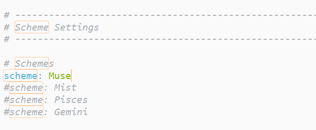
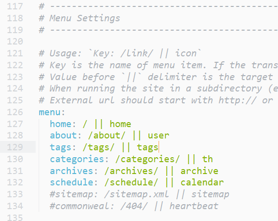
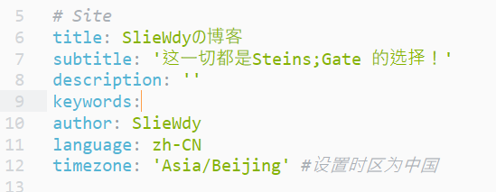
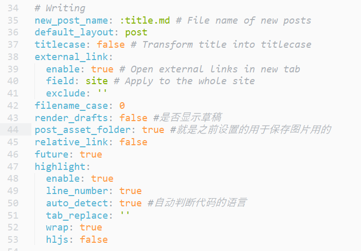
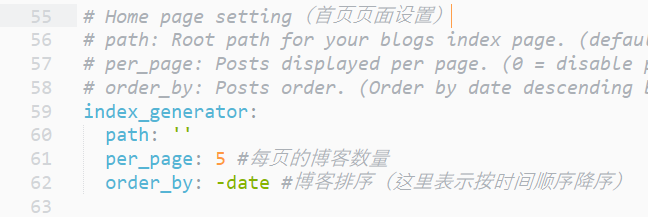
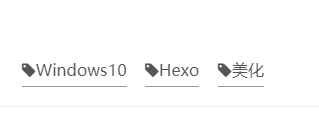

Hexo-NexT主题美化和配置|基础
本文章发布时间久远，有些内容不再具有参考性，望周知
设置博客主题
GitHub上有许多开源的hexo博客的主题项目，当然，我们也可以直接使用这些主题来美化我们的博客，
这里，以GitHub上star最高的hexo主题：next为例进行设置
首先是 下载主题：
使用命令行窗口（cmd/git bash）移至hexo所在的目录下。
输入命令git clone https://github.com/theme-next/hexo-theme-next themes/next等待即可
这里的themes/next即是克隆的路径
（也可以手动去项目地址下载并复制到指定目录）
之后，便能够在hexo所在的目录下的themes文件夹内找到文件夹next，另一个landscape则是之前的默认主题。
之后，再次进入_config.yml,找到theme属性进行更改
1 | theme: next //注意空格！！！ |
于是可以继续通过……
1 | $ hexo g |
进行预览
对主题进行配置
更改为中文界面
在根目录中的_config.yml中，
找到language选项更改：
1 | language: zh-CN |
其实这里的zh-CN对应的是themes/next/language里面所对应的yml文件
设置NexT主题风格
在themes/next下的_config.yml中，
找到

可通过预览选择自己喜欢的风格
设置分类和标签以及关于我
在gitbash中键入：
1 | $ hexo new page categories |
于是，分别在相应的categories和tags和about文件夹里找到index.md文件并打开
分别添加内容如下：
1 | --- |
1 | --- |
1 | --- |
在themes/next下的_config.yml中，进行如下设置

1 | # Enable / Disable menu icons / item badges. |
最后，在我们想添加标签和分类的博客上方，依次输入即可。
1 | --- |
设置站点配置
即根据站点配置文件设置基本信息：
首页信息

代码信息

首页博客信息

添加页面背景特效
设置步骤：
进入gitbash，键入命令：
1 | git clone https://github.com/theme-next/theme-next-canvas-nest themes/next/source/lib/canvas-nest |
在next/_config.yml后添加语句：
1 | canvas_nest: true |
（如果无效，请进入next/source/lib/canvas-nest根据里面的readme.md手动进行操作即可）
鼠标点击出现爱心特效
这个方法是百度来的，不懂前端也可以不用管，直接复制代码即可
设置方法：
找到themes/next/source/js，新建一个文件love.js
这个文件内的代码如下：
1 | !function(e,t,a){function n(){c(".heart{width: 10px;height: 10px;position: fixed;background: #f00;transform: rotate(45deg);-webkit-transform: rotate(45deg);-moz-transform: rotate(45deg);}.heart:after,.heart:before{content: '';width: inherit;height: inherit;background: inherit;border-radius: 50%;-webkit-border-radius: 50%;-moz-border-radius: 50%;position: fixed;}.heart:after{top: -5px;}.heart:before{left: -5px;}"),o(),r()}function r(){for(var e=0;e<d.length;e++)d[e].alpha<=0?(t.body.removeChild(d[e].el),d.splice(e,1)):(d[e].y--,d[e].scale+=.004,d[e].alpha-=.013,d[e].el.style.cssText="left:"+d[e].x+"px;top:"+d[e].y+"px;opacity:"+d[e].alpha+";transform:scale("+d[e].scale+","+d[e].scale+") rotate(45deg);background:"+d[e].color+";z-index:99999");requestAnimationFrame(r)}function o(){var t="function"==typeof e.onclick&&e.onclick;e.onclick=function(e){t&&t(),i(e)}}function i(e){var a=t.createElement("div");a.className="heart",d.push({el:a,x:e.clientX-5,y:e.clientY-5,scale:1,alpha:1,color:s()}),t.body.appendChild(a)}function c(e){var a=t.createElement("style");a.type="text/css";try{a.appendChild(t.createTextNode(e))}catch(t){a.styleSheet.cssText=e}t.getElementsByTagName("head")[0].appendChild(a)}function s(){return"rgb("+~~(255*Math.random())+","+~~(255*Math.random())+","+~~(255*Math.random())+")"}var d=[];e.requestAnimationFrame=function(){return e.requestAnimationFrame||e.webkitRequestAnimationFrame||e.mozRequestAnimationFrame||e.oRequestAnimationFrame||e.msRequestAnimationFrame||function(e){setTimeout(e,1e3/60)}}(),n()}(window,document); |
之后打开themes/next/layout/_layout.swig，末尾写入：
1 | <script type="text/javascript" src="/js/love.js"></script> |
即可！
设置个人头像
在next配置文件中找到avatar设置
1 | # Sidebar Avatar |
设置社交、打赏图标和版权声明
社交图标
在next配置文件中找到social设置
1 | social: |
选择需要显示的社交网站，去掉注释并更改网站即可！
打赏图标
在next配置文件中找到reward设置
1 | reward: |
支持微信支付、支付宝等等
然后
1 | # Reward (Donate) |
再在此处打开显示选项
（文字闪烁问题后面会有修复方法）
版权声明
在next配置文件中找到creative设置
1 | creative_commons: |
手动选true即可！
更改文章末尾的标签图标
默认是
#标签的形式，为美观，选择使用另一个图标代替井号操作方法：
进入
/themes/next/layout/_macro/post.swig文件，搜索找到：rel="tag">#，将#改为：
效果如下：
注意，以上方法为老版本，新版应该根据下面的代码自行进行修改：
1 | <a href="{{ url_for(tag.path) }}" rel="tag"> |
摘要显示
一般情况下，next配置文件里默认打勾的：
1 | # Automatically excerpt description in homepage as preamble text. |
因此，我们编写博客的时候，自己手动在需要截断的地方手动打入：
1 | <!--more--> |
即可
更多进阶设置且听下回分解！！
下期预告：
对打赏问题出现的闪烁问题进行解决
自定义图标和背景
对特殊文章进行加密处理
…
参考资料
https://blog.csdn.net/nightmare_dimple/article/details/86661502